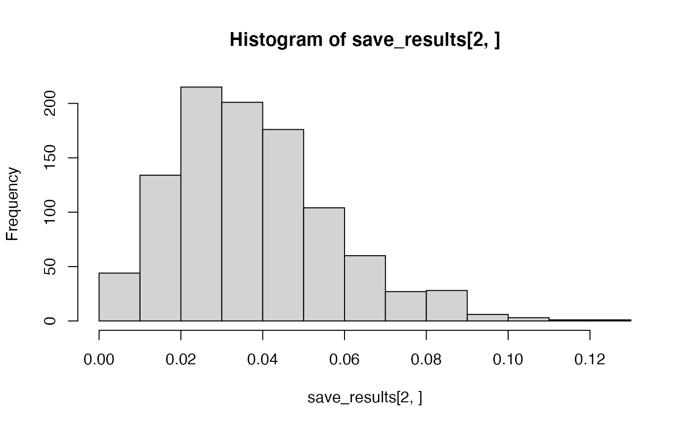

lab5
lab5.Rmd- Use pwr package to compute power for anova:
library(pwr)
#calculate power given k, n, f
pwr.anova.test(k = 3,
n = 10,
f = .5,
sig.level = .05,
power = )
#>
#> Balanced one-way analysis of variance power calculation
#>
#> k = 3
#> n = 10
#> f = 0.5
#> sig.level = 0.05
#> power = 0.6352398
#>
#> NOTE: n is number in each group
# calcuale n, given, k, f, power
pwr.anova.test(k = 3,
n = ,
f = .2,
sig.level = .05,
power = .8)
#>
#> Balanced one-way analysis of variance power calculation
#>
#> k = 3
#> n = 81.29603
#> f = 0.2
#> sig.level = 0.05
#> power = 0.8
#>
#> NOTE: n is number in each groupBUT what is f?
https://cran.r-project.org/web/packages/pwr/vignettes/pwr-vignette.html
- Eta squared, a measure of effect size for anova
https://cran.r-project.org/web/packages/effectsize/vignettes/anovaES.html
library(effectsize)
#> Warning: package 'effectsize' was built under R version 4.1.2
library(tibble)
# generate data for anova
levels <- 3
n_per_level <- 81
alternative_data <- tibble(subjects = 1:(levels*n_per_level),
IV = as.factor(rep(1:levels, each = n_per_level)),
DV = c(rnorm(n_per_level, .5, 1),
rnorm(n_per_level, 0, 1),
rnorm(n_per_level, 0, 1)
)
)
aov.out <- aov(DV ~ IV, data = alternative_data)
summary_aov <- summary(aov.out)
summary_aov[[1]]$`Pr(>F)`[1]
#> [1] 0.05319951
# calculate eta_squared from anova object
effectsize::eta_squared(aov.out)
#> For one-way between subjects designs, partial eta squared is equivalent to eta squared.
#> Returning eta squared.
#> # Effect Size for ANOVA
#>
#> Parameter | Eta2 | 95% CI
#> -------------------------------
#> IV | 0.02 | [0.00, 1.00]
#>
#> - One-sided CIs: upper bound fixed at (1).- Get a sense of eta-squared
run_aov <- function(){
# generate data for anova
levels <- 4
n_per_level <- 81
alternative_data <- tibble(subjects = 1:(levels*n_per_level),
IV = as.factor(rep(1:levels, each = n_per_level)),
DV = c(rnorm(n_per_level, .4, 1),
rnorm(n_per_level, 0, 1),
rnorm(n_per_level, 0, 1),
rnorm(n_per_level, 0, 1)
)
)
aov.out <- aov(DV ~ IV, data = alternative_data)
summary_aov <- summary(aov.out)
return(c(summary_aov[[1]]$`Pr(>F)`[1],
effectsize::eta_squared(aov.out, partial=FALSE)$Eta2))
}
# run anova simulation
save_results <- replicate(1000,run_aov())
# proportion significant simulations
length(which(save_results[1,] < .05))/1000
#> [1] 0.758
# effect_size
hist(save_results[2,])
mean(save_results[2,])
#> [1] 0.03759445- Power to detect a 5% increase in a multiple choice test?
run_aov <- function(){
groups <- 4
n_per_group <- 25
num_questions <- 10
alternative_data <- tibble(subjects = 1:(groups*n_per_group),
IV = as.factor(rep(1:groups, each = n_per_group)),
DV = c(rbinom(n_per_group,num_questions,.75),
rbinom(n_per_group,num_questions,.75),
rbinom(n_per_group,num_questions,.75),
rbinom(n_per_group,num_questions,.80)
)
)
aov.out <- aov(DV ~ IV, data = alternative_data)
summary_aov <- summary(aov.out)
return(c(summary_aov[[1]]$`Pr(>F)`[1],
effectsize::eta_squared(aov.out, partial=FALSE)$Eta2))
}
# run anova simulation
save_results <- replicate(100,run_aov())
# proportion significant simulations
length(which(save_results[1,] < .05))/100
#> [1] 0.28
# mean_effect size
mean(save_results[2,])
#> [1] 0.06057287